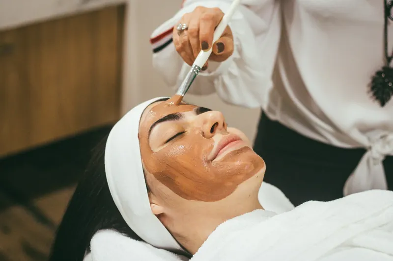

Megereszkedett, rugalmatlan bőr
A kollagén- és elasztintermelés csökkenésével a bőröd feszessége romlik, az arcod kontúrjai elmosódnak, és a ráncok egyre mélyebbé válnak.
A bőröd egyedi, ezért a kezeléseidnek is annak kell lennie. Legyen szó ráncok halványításáról, feszesítésről vagy aknékezelésről, a legmodernebb technológiákkal és célzott hatóanyagokkal dolgozom, hogy bőröd természetesen megújuljon és hosszú távon ragyogó maradjon.

Észrevetted, hogy a bőröd már nem olyan, mint régen? Legyen szó feszességvesztésről, aknéról, pigmentfoltokról vagy érzékenységről, a bőröd aktuális állapotából indulunk ki.
A kollagén- és elasztintermelés csökkenésével a bőröd feszessége romlik, az arcod kontúrjai elmosódnak, és a ráncok egyre mélyebbé válnak.
A kezeletlen pattanások és gyulladások nyomot hagyhatnak, amelyek idővel mély hegekké alakulnak, megnehezítve a bőröd simaságának visszaállítását.
A hidratáció hiánya, az UV-sugárzás és a hormonális változások miatt a bőr egyenetlenné válik, elveszítheti természetes ragyogását, és egyre több pigmentfolt jelenik meg.
A bőr védőrétegének meggyengülése miatt könnyebben kipirosodik, viszket vagy gyulladásra hajlamos, és nehezebben regenerálódik.
Az egészséges, sejtszintű bőrmegújulást az értékes növényi összetevők mellett aktív és szállító hatóanyagok (többrétegű liposzómák, nanoszómák, ceramidok, foszfolipidek stb.) biztosítják. A látványos és gyors bőrfiatalítást a kozmetikai ipar leginnovatívabb bőrbarát hatóanyagai, kimondottan magas koncentrációban teszik lehetővé.
Peptidekre épülő, személyre szabott luxus arckezelések a bőr aktuális igényeihez igazítva.
Nálam mindent megtalálsz, ami teljes szépülésedhez, pihenésedhez szükséges. Minden kezelésem személyre szabott, mely során figyelembe veszem bőröd aktuális igényét, állapotát.
Hiszek abban, hogy a megfelelő kezelés látványos változást hoz. Ezért 5 alkalmas kúrák esetén elégedettségi garanciát vállalok: ha nem vagy elégedett, a díj 50%-át visszatérítem.
A bőrápolás hosszú távú befektetés önmagadba. Egy jól felépített, komplex kezeléssorozat nemcsak látványos eredményt mutat, hanem bőröd egészségét is támogatja. Válaszd ki a számodra legmegfelelőbb csomagot, és tapasztald meg, milyen érzés, amikor a bőröd valóban hálás a törődésért.
79 000 Ft
Feszesebb, simább, üdébb bőr, kíméletes, mégis hatékony bőrfiatalítás célzott kezelésekkel.
99 000 Ft
Intenzív bőrmegújítás, amely láthatóan csökkenti a ráncokat és visszaadja a bőr rugalmasságát.
59 000 Ft
Hatékony megoldás a makacs pattanások ellen, hogy bőröd tiszta, egészséges és ragyogó legyen.
Korábbi rossz tapasztalatok miatt sokáig nem mertem kozmetikushoz járni, de ez az itt töltött első alkalmat követően megváltozott. A bőröm minden kezelés után szinte ragyog, remekül érzem magam, és Eliza segítségével sikerült kialakítanom a helyes, bőrtípusomnak megfelelő arcápolási rutint. Szívből ajánlom!
Eliza nagyon kedves, csupaszív kozmetikus, a kozmetika csodaszép, tiszta, hangulatos, mindig örömmel járok ide vissza. Legutóbb a 10 alkalmas arcfiatalító kezelést vettem igénybe, és az eredmény magáért beszél, azóta több pozitív visszajelzést is kaptam ismerőseimtől. Csak ajánlani tudom Elizát!
Vendégeimet kizárólag előre egyeztetett időpontban tudom fogadni, hétfőtől péntekig 9:00 és 16:00 között. Telefonon vagy az űrlapon keresztül tudsz bejelentkezni, amire rövid időn belül visszajelzek.
A kezelés előtt alaposan felmérem a bőröd állapotát, megismerem arcápolási szokásaidat, az eddig használt termékeidet, és ezek alapján összeállítom a számodra legmegfelelőbb kezelési tervet.
A személyre szabott terv alapján végzem el a kezelést, amelyet minden esetben egy relaxáló arcmasszázs egészít ki, hogy a bőröd felfrissüljön és a hatóanyagok még jobban beépüljenek.
A kezelést követően segítek az otthoni bőrápolási rutinod kialakításában, hogy a bőröd tartósan egészséges és ragyogó maradjon. Személyre szabott termékajánlásokkal és praktikus tanácsokkal látlak el.
Kérdésed van a kezelésekről, vagy időpontot szeretnél egyeztetni? Keress bizalommal, és segítek megtalálni a számodra legjobb megoldást!